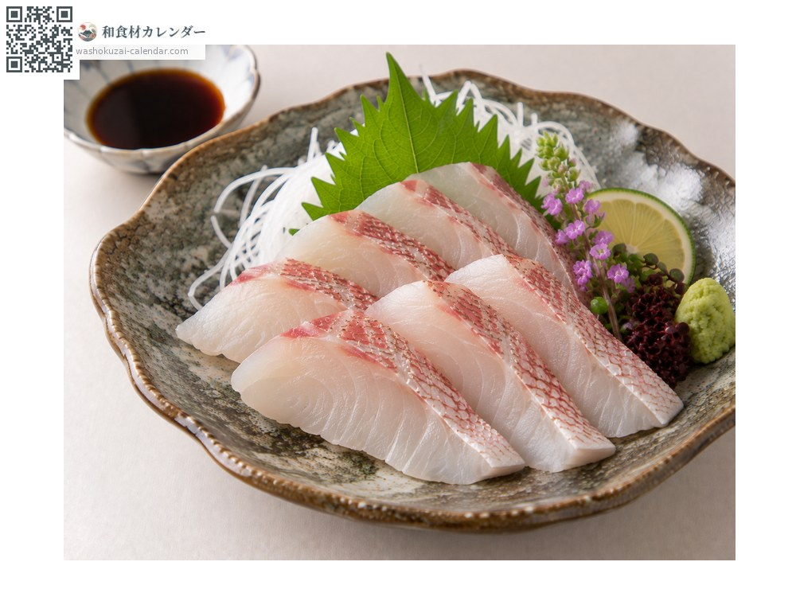
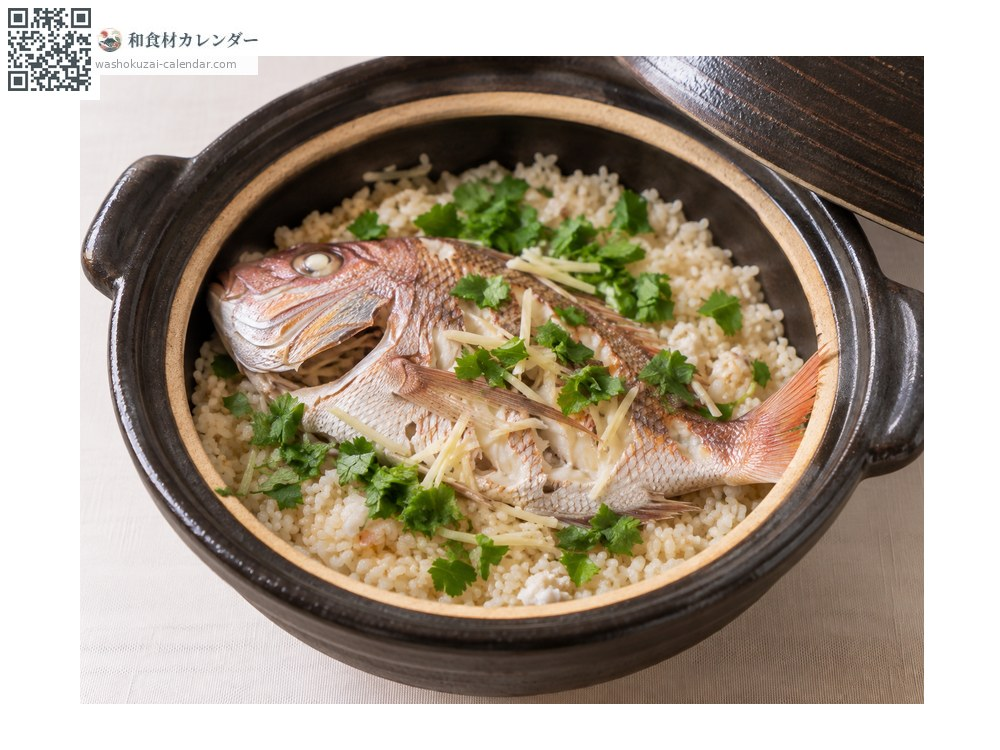
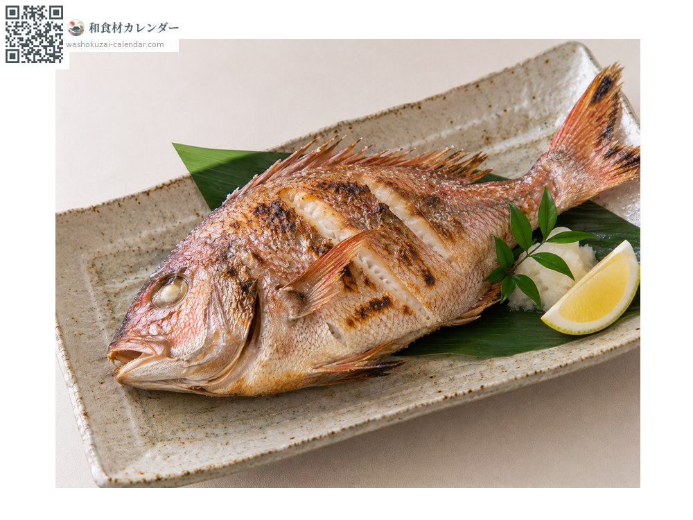
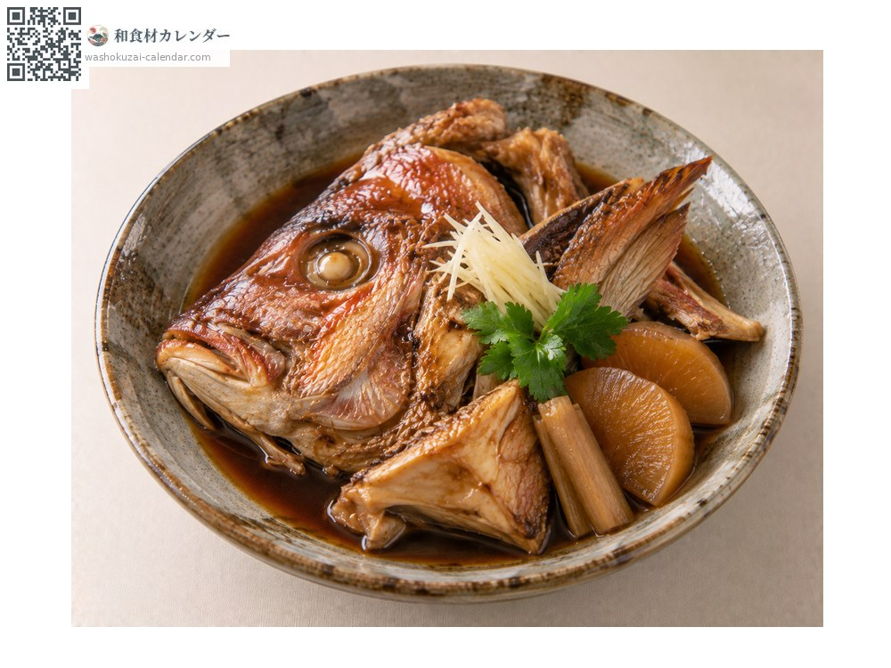

魚介
マダイ
まだい
別名・別表記真鯛、鯛、たい、タイ、madai、tai
旬は3月・4月・5月

旬の時期
1月
2月
3月
4月
5月
6月
7月
8月
9月
10月
11月
12月
旬出回り
調理法

刺身
淡白で上品。昆布締めにすると旨みが増す。

鯛めし
切り身を米と炊き込む。

塩焼き
祝いの席の定番。

あら炊き
頭やかまを甘辛く煮る。
選び方
目が澄み、体色が鮮やかな桜色のもの。尾びれが黒ずんでいないもの。天然物は尾びれの先が尖る。
保存方法
持ちが良い魚。内臓を取って冷蔵すれば2〜3日はもつ。
主な産地
豆知識
春の産卵前は体色が桜色を帯び「桜鯛」と呼ばれる。祝い事に使われるのは色と姿の良さ、日持ちの良さから。